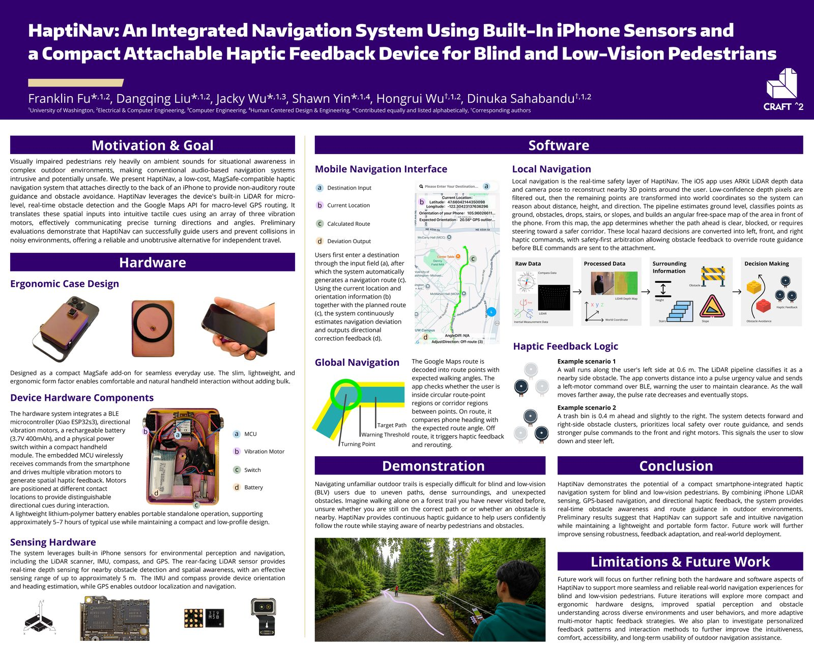
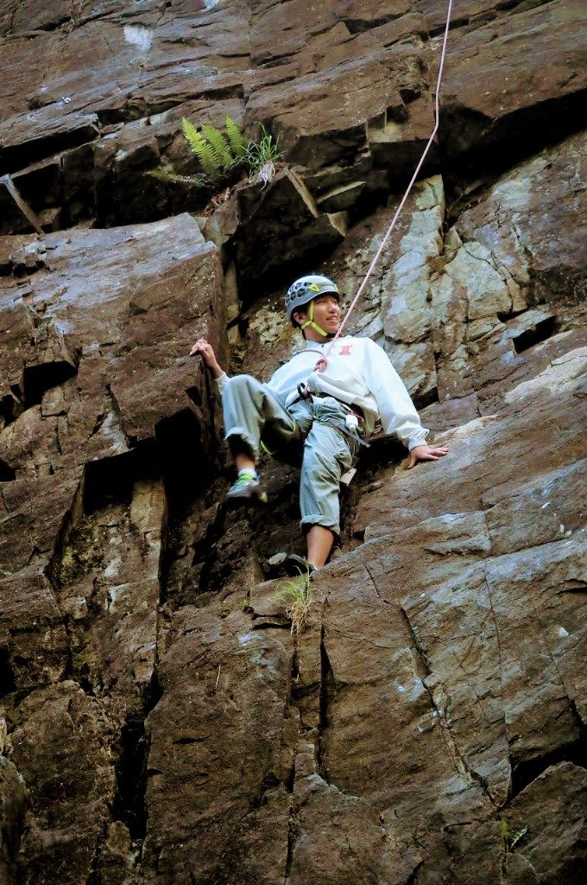
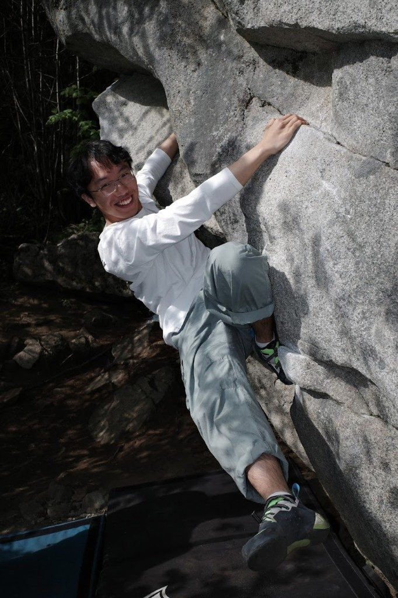
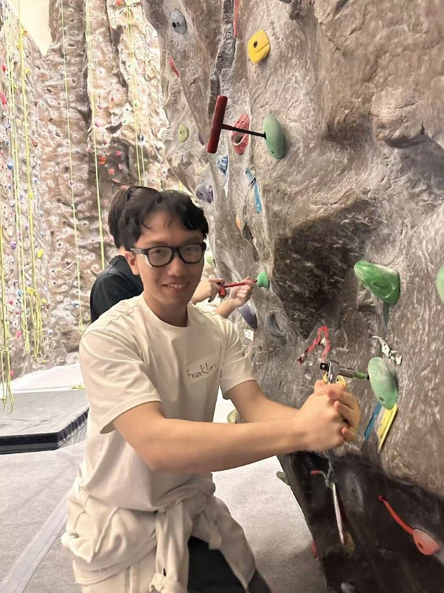
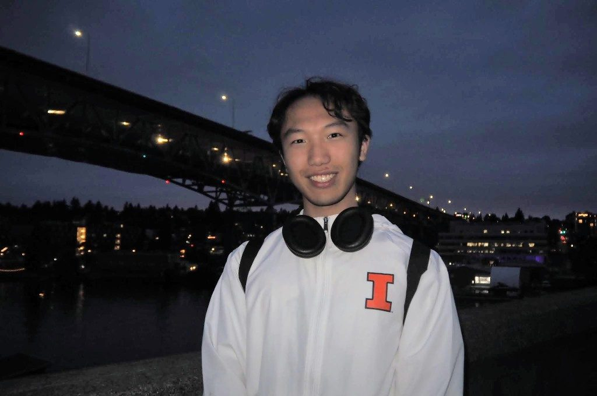

I'm an ECE student at UW who's happiest when I'm building something. Right now that means writing
flight-control firmware for our Husky Robotics drone, prototyping a haptic navigation system for
blind pedestrians, and chasing alignment failures in medical LLMs — I just submitted my first
paper to MICCAI 2026. When I'm not at a workbench, you'll usually find me on a climbing wall, out
bouldering, or somewhere in the mountains.
Education
BS in Electrical & Computer Engineering University of Washington (2024 – 2028)
Seattle, WA — usually at a workbench, in the climbing gym, or out on a boulder somewhere
Experience
UW Husky Robotics — Drone Subsystem
Mar 2026 – Present
Embedded Firmware Developer
Brought up the BMI270 6-axis IMU on STM32H753ZI (Cortex-M7, 480 MHz) over I2C1 using the Bosch SensorAPI, streaming calibrated accel/gyro data at 100 Hz ODR.
Debugged a SPI→I2C interface pivot caused by a hardware COMM SEL bridge on the MikroE click board, and resolved a newlib-nano float printf linker flag issue to enable USART3 VCP readout.
Architected a dual-board system (STM32G431KB ESC + STM32H753ZI flight controller) with FDCAN as the inter-board backbone, targeting three-phase center-aligned PWM via TIM1 for an FOC motor drive pipeline.
Established an AI-assisted embedded workflow in Cursor IDE, automating the flash-and-monitor cycle via custom tasks.json with pyserial miniterm.
STM32C/C++FDCANI2CFOC
Zhejiang University, Binjiang Institute
Jan 2026 – Mar 2026
Intern Research Assistant · First-Author MICCAI 2026 Submission
Co-authored and submitted a first-author paper to MICCAI 2026: "Beyond Accuracy: A Tri-Dimensional Behavioral Stress Test for Uncovering Safety Risks in Small Medical LLMs."
Designed the Diabetes-FCT Benchmark — a 1,020-question dataset evaluating LLM vulnerabilities including Sycophancy Resistance and Exclusion Logic.
Engineered an automated zero-shot evaluation pipeline (Python + Regex + Ollama) to stress-test Llama-3.1-8B and Gemma-7B locally.
Identified critical alignment failures (the "Yes-Man" phenotype, the "Accuracy Paradox") and mapped them to RLHF alignment taxes.
LLM EvaluationAI SafetyPythonMICCAI 2026
UW Solar
Oct 2025 – Dec 2025
Project & Documentation Assistant
Contributed to technical planning for solar projects, including the resiliency tunnel and SER initiatives.
Analyzed performance of the E18 pilot solar installation — system setup, efficiency metrics, and workflow.
Maintained schematics, progress logs, and evaluation reports; tracked milestones and identified design improvements.
DocumentationSolarProject Planning
Dilipow Electronics (Changzhou)
Aug 2025 – Sept 2025
Internationalization & Project Intern
Led English-language website localization, coordinating with engineers, translators, and developers.
Translated and verified technical product documentation for accuracy and clarity.
Managed the project plan to launch the company's first English website on time.
LocalizationProject Management
UW Craft² Student Research Lab
Sept 2024 – May 2026
Mechanics Leader
Designed a phone-mounted tangible compass with vibration motors, paired with a navigation app for users with vision disabilities.
Developed a wrist-mounted rotating compass prototype enabling hands-free tactile navigation.
Presented vibrotactile navigation research at the UW Undergraduate Research Symposium.
HardwareUX ResearchAccessibility
FTC Griffinators Robotics Team
Sept 2022 – May 2024
Team Captain & Mechanics Leader
Led mechanical design and autonomous system development for competition robots; integrated odometry wheels and distance sensors for real-time localization.
Designed a high-precision robot claw, landing flaps, and an energy-absorbing nose; solved servo failure issues with a custom gearbox mechanism.
Guided team strategy — contributed to a Winning Alliance title and earned Best Design in MA for the 2022–2023 season.
RoboticsMechanical DesignLeadership
Projects
HaptiNav — Haptic Navigation for Blind & Low-Vision Pedestrians
iOS · ESP32-S3 · ARKit LiDAR · BLE

UW Undergraduate Research Symposium · May 2026
A MagSafe-compatible iPhone attachment housing an ESP32-S3 BLE MCU and three directional vibration motors,
delivering real-time left/right/forward haptic cues for non-visual pedestrian navigation. An iOS app uses
ARKit LiDAR depth data to classify nearby obstacles (ground, drops, stairs, slopes) up to 5 m and
generates an angular free-space map. A dual-layer pipeline combines Google Maps macro routing with a
local LiDAR safety layer that overrides guidance when obstacles are detected.
UW Husky Robotics rover at the University Rover Challenge
Embedded firmware for the UW Husky Robotics drone. Brought up the BMI270 IMU on STM32H753ZI, implemented a
dual-board system (G431KB ESC + H7 flight controller) with FDCAN, and laid the foundation for a Field-Oriented
Control motor drive. Built an AI-assisted flash-and-monitor workflow in Cursor IDE.
End-to-end computer-vision pipeline + ESP32-S3 laser-marking gantry for biology-lab automation. YOLOv8n
detects tube caps on the rack; OpenCV homography (4-corner fiducial calibration) maps pixels to physical
millimetres on a standard 8×12 EP tube rack. A Flutter mobile app sends coordinates over BLE to a
XIAO ESP32-S3 driving NEMA17 steppers via A4988 drivers, firing a PWM-controlled diode laser at each tube.
A rigorous 1,020-question benchmark for evaluating medical-LLM safety. Built an automated zero-shot
evaluation pipeline (Python + Regex + Ollama) to stress-test Llama-3.1-8B and Gemma-7B on Sycophancy
Resistance and Exclusion Logic, surfacing the "Yes-Man" phenotype and the "Accuracy Paradox" as concrete
RLHF alignment failures.
A wrist-mounted rotating compass with vibration motors that enables hands-free tactile navigation for
users with vision disabilities. Phone-mounted tangible compass variant paired with a companion nav app.
Presented at the UW Undergraduate Research Symposium.
Two seasons leading mechanical design and autonomous systems for our FTC competition team. Designed a
high-precision robot claw, landing flaps, and an energy-absorbing nose; integrated odometry wheels and
distance sensors for real-time localization; and solved chronic servo failures with a custom gearbox
mechanism. The team earned a Winning Alliance title and Best Design in
Massachusetts during the 2022–2023 season — some of my favorite memories from high school.
Sept 2022 – May 2024Winning Alliance · Best Design (MA)
Skills
Programming & Data
Python (Pandas, NumPy)
C / C++
MATLAB
Git / GitHub
Cursor IDE
Embedded & Electronics
STM32 (H7, G4)
ESP32 / ESP32-S3
Arduino
PCB Design & Prototyping
Oscilloscopes & Logic Analyzers
Mechanical & Design
SolidWorks (CSWA Certified)
Fusion 360
3D Printing (FDM / SLA)
Laser Cutting & Waterjet
Rapid Prototyping
AI & Research
LLM Evaluation & Benchmarking
Computer Vision (YOLOv8)
RAG & API Integration
Auto-benchmarking Pipelines
Data Analysis
Languages
English — Professional
Chinese — Native
Outside the Lab
Engineering is what I do, but it's not everything I am. I grew up climbing, and these days I'm usually
at the climbing gym a few times a week or out bouldering in the Cascades on weekends. The combination
of physical problem-solving and the outdoors keeps me sane between firmware sessions.

Outdoor climbing

Bouldering

Climbing gym

Around Seattle
Get In Touch
I'm interested in robotics, embedded systems, and AI safety research opportunities. Let's connect.